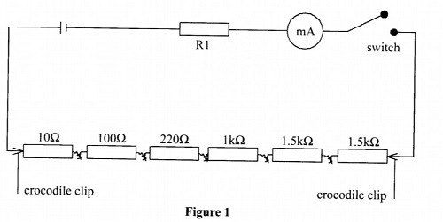
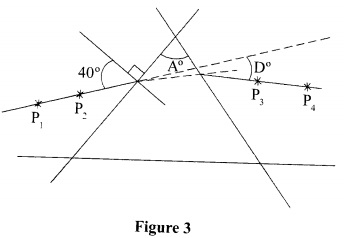
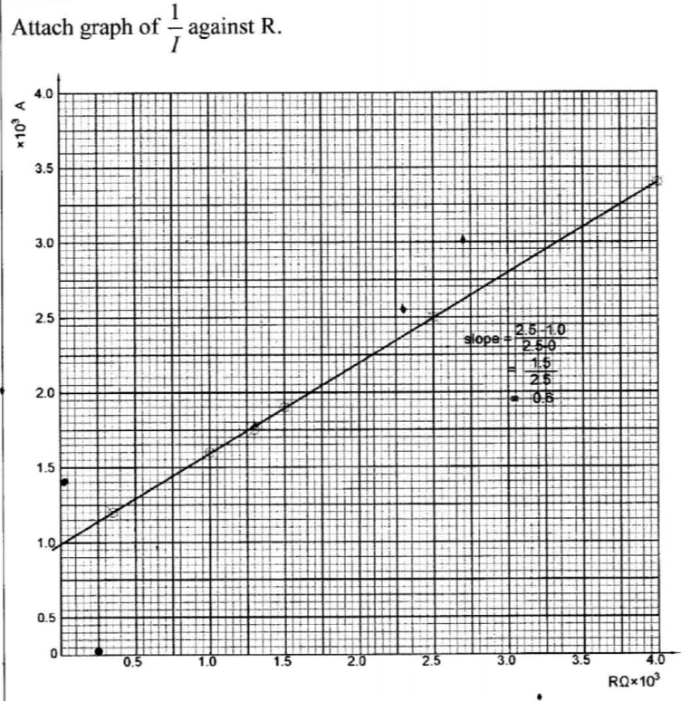
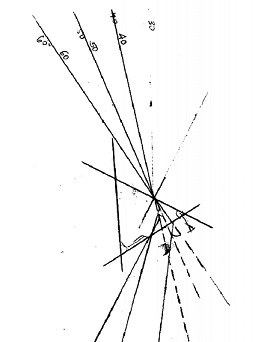

PART A
1. You are provided with the following:
- One dry cell in a cell holder
- One milliammeter
- A resistor labelled RI
- A chain of six resistors
- A switch
- Connecting wires
Proceed as follows:
(a) Set up the circuit as shown in Figure 1

Switch on the circuit to obtain a positive deflection in the milliammeter. Record the reading II of the milliammeter.
= mA (1 mark)
(b) Remove the crocodile clips from the ends of the chain of resistors and connect them across two resistors in the resistance chain that add up to 3.0 kit. Record the reading of the milliammeter 12.
12 = mA (1 mark)
(c) Repeat the procedure in (b) for other values of resistance R shown in Table 1 and complete Table 1.
(Hint: The values of R may be obtained by combining two or more resistors in the chain)
(d) Plot a graph of 1/1 (y axis) against R
(e) (i) Determine the slope S of the graph. (3 marks)
(ii) Given the equation E = I(R-FRI) determine the values of:
(I) E. (3 marks)
(II) R1 (2 marks)
2
(c) Draw a line at angle i = 40° to the normal. Stick two pins P1 and P2 vertically on this line. (see Figure 3).

Place the prism accurately on the outline. By viewing through the opposite side, stick two other pins P3 and P4 vertically such that they are in line with the two images of pins P1 and P2.
(d) Remove the prism and the pins. Draw a line joining the marks made by P3 and P4. Extend lines P1 P2 and P3 P4 to intersect. Hence measure the angle of deviation D. D = (1 mark)
(e) For two other values of angle i shown in Table 2 locate and measure the corresponding angles of deviation. Complete Table 2.
(f) (i) Determine the average value Dm of D
(ii) Determine the constant K using the equation
k = sin(A + Dm)2 sin A 2
PART B
(Read all the instructions before starting this part)
Using the thermometer measure and record the temperature of the room°° =..............°C
(h) Using the 250m1 beaker, collect 200m1 of hot water from the boiling water source. Place the thermometer into the hot water and wait until the water cools to 80°C then start the stopwatch and record the time t1, it takes the water to cool to 75°C t1 = ............ seconds
i) Wait until the water cools to 70°C then start the stopwatch and record the time t1 it takes the water to cool to 65°C. t2 = ........ seconds (1 mark)
Determine the rate of temperature change X and Y in the two time intervals;
(I)
X = 77.5 - θ0 , t1
(II)
Y = 67.5 - θ0 . t2
(k) State with a reason how the rate of change of temperature between 90°C to 85°C compares with X. (2 marks)
1.
a) I1 = 0.3 mA
b) I2 = 0.37 mA

e)
(i)Slope =
2.5 - 12.5 - 0
= 0.60
(ii)(I)1 = R + R1 I E E
1 = 1 (R + R1) I E
I
1 = Slope = 0.6 E
E = 1 ÷ 0.6 = 1.67
II
R1/E = R1 ÷ 1.67 = y intercept
= s
e) D1 = 41°
D2 = 39°
D3 = 40°
f)
i. Dm = (41° + 39° + 40°) ÷ 3 = 40°
ii. k = sin(60 + 40)2 sin 60 2
= Sin 50 sin 30
= 1.53
g) θ0 = 24 °C
h) t1 = 1.59sec
i) t2 = 3.00sec
j)
x = 77.5 - 24 1.59
= 33.65
x = 67.5 - 24 3.00
= 14.5
k) It is greater than x because the cooling rate depends on the difference between the highest temperature and the room temperature.
